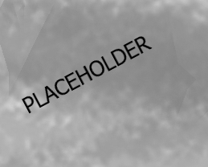

As a digital medium, web design is far more subject to shifts in technology than its traditional print forbearers. But we're now 18 years into the new millennium, so that's no surprise, is it? What is surprising is the way web designers have continued to cope with increasing technical challenges and still manage to create sites that are user-friendly, clear and innovative, consistent with the corporate style, adaptable to every conceivable device and just plain beautiful all at once.
2017 saw many advancements, including the mobile usage finally overtaking desktop browsing. This means 2018 is going to have to fully utilize mobile functionality in ways we've never seen before while desktops must continue to evolve to stay relevant. With all that in mind, let's take a look at some notable web design trends coming poised to take over in 2018.
9 web design trends to watch in 2018

- Drop shadows & depth
- Color schemes
- Particle backgrounds
- Mobile first
- Custom illustrations
- Big, bold typography
- Grid layouts
- Integrated animations
- Dynamic gradients